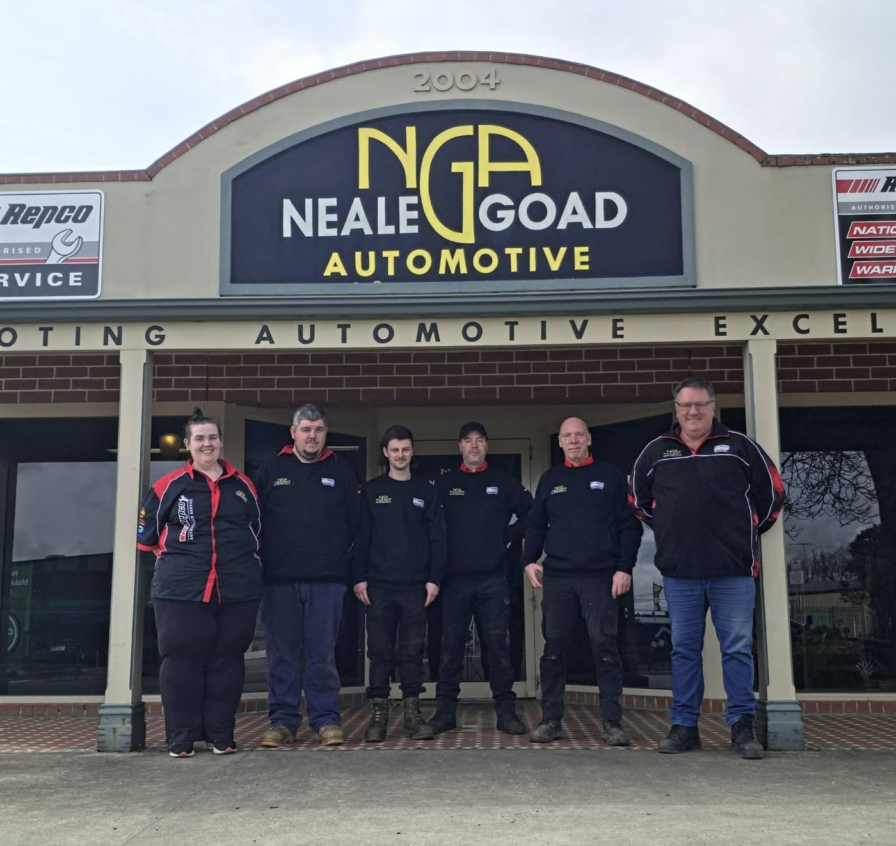

Finish the service
The workshop records completed work and approves the next service date or kilometre interval.
WORKSHOP RECORDPREPARED FOR DANNY & THE WORKSHOP TEAM
Introducing Neale Goad Customer Care. A simple web app that helps the team follow up, keep the next service in sight, and make returning easy.
Proposal & interactive prototype. Sample records only.

THE OPPORTUNITY
As bookings grow, follow-up needs a reliable home. Customer Care would give the team one clear queue of who needs attention, what was recommended, and what happens next.
The workshop records completed work and approves the next service date or kilometre interval.
WORKSHOP RECORDA useful reminder reaches an eligible customer through their approved contact channel.
CUSTOMER REMINDERThe customer requests a preferred date. Staff confirm the actual appointment.
REQUEST → CONFIRMTrack the completed return visit and set the next recommendation with the workshop.
COMPLETED VISITDesigned to fit the way you already work. Your current website takes booking requests, followed by staff confirmation. This proposal keeps that distinction and your existing service options. View current booking flow ↗
A SMALL PREVIEW OF THE POSSIBILITIES
Preview a reminder, request a visit as the customer, then confirm it as the workshop.
YOUR FOLLOW-UP WORKSPACE
ALEX · SAMPLE CUSTOMER
DEMO-01 · Illustrative vehicle
Last recorded: 72,400 km. Current mileage has not been checked.
This shows proposed behaviour. Customer login, records, calendar and messaging connections are not active.
A FOCUSED FIRST RELEASE
Keep the first release centred on one job: turning a completed service into the next completed visit. Expand once the workshop has tested the process.
Multiple vehicles per customer, last service, workshop-approved next due details and contact preferences.
Due services, outstanding requests, message status and a clear owner for the next action.
Approved messages, a request link and separate staff confirmation. Pause duplicate follow-up while a request is being reviewed.
Record which follow-ups lead to confirmed and completed return visits.
LATER, IF THE PILOT SUPPORTS IT
Secure service-history access, invoices from the existing system, recommended-repair follow-up and fleet views.
KEEP THE FIRST VERSION MANAGEABLE
Payments, accounting replacement, diagnostic decisions, loyalty schemes and App Store apps are outside the proposed first release.
CONNECTIONS, WITH A CLEAR SOURCE OF TRUTH
First confirm the current software and its supported API or export. Jobs, invoices and calendar should stay authoritative in that system where possible. A small managed import can be assessed if a direct connection is unavailable.
A PRACTICAL ROLLOUT
Each stage has a clear exit point. Timing and costs follow discovery, vendor access and workshop approval.
Confirm systems, record quality, staff ownership, permissions, templates and a baseline.
Use a staff-approved eligible group. Check delivery, replies, duplicate prevention and booking handover.
Review completed visits, customer feedback and staff effort before expanding features or messaging.
Completed return visits from follow-up · Requests → confirmations · No-shows · Staff time per follow-up
Compare a defined pilot period with an agreed baseline. No revenue uplift is assumed.Return rate: eligible reminder recipients with a completed return service ÷ eligible reminder recipients, within an agreed measurement window. Match visits to the follow-up record; do not assume a reminder caused every return.
Request conversion: confirmed appointments ÷ booking requests for the same cohort and period. Track completed visits separately.
No-show rate: missed appointments ÷ confirmed appointments due in the period. Compare staff follow-up time using the same task definition before and during the pilot.
LET’S MAKE THIS FIT YOUR WORKSHOP
These are discovery questions, not assumptions. Danny and Kim can use this checklist for the next discussion. Notes can be saved on this device or downloaded; nothing is submitted.
Confirm customer ownership, staff permissions, secure customer access, backup and retention rules. A registration number alone should not unlock someone’s history.
Approve templates, consent evidence, reply ownership, opt-out handling and Australian SMS sender setup. Promotional content needs appropriate marketing permission.
Confirm actual hours, pickup eligibility, appointment capacity and who handles exceptions. Roadworthy inspections are not given an invented recurring expiry schedule.
A secure backend, vendor access, monitoring and approved running costs are required. This public prototype cannot send messages or access workshop records.
THE PROPOSED NEXT STEP
Confirm the current software with Kim, agree the workflow with Danny, and scope a first release around what the workshop actually needs.
Reviewed 21 October 2026. Business information comes from the public website. App features, rollout and sample records are proposals; integration access remains unconfirmed.